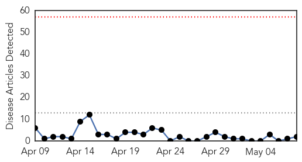

30 Day Trends
Web: 0 alerts, 0 warnings
Twitter: 1 alerts, 0 warnings
Top Articles:
Top Tweets:
- 0.614
- Don't stigmatize when naming for new diseases, @WHO says, pointing to MERS & swine flu as names to avoid. http://t.co/wBG8fWqNIo 1/2
- 0.592
- The use of disease names such as ‘swine flu’ has stigmatized certain communities or economic sectors
Web/News Articles
Tweets

Article Locations

Article Confidences